Farming Guides
Farming Fire Oil in a Solo World (Global Server)
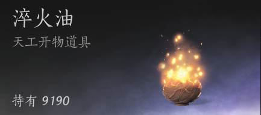
(Early-game Fire Divinecraft coats your weapon so it deals more HP damage.)

(Advanced Fire Divinecraft unlocks after Hidden Mountain. Craft it with 2 Fire Oil and either 1 Poison or 1 Water.)
Running out of Fire Divinecraft or need more Fire Oil to craft advanced variants? This guide shows where to gather it.
⌕ Double-click any image to zoom in, or focus it and press Enter to view the original.
Gathering Buddha’s Tear
Buddha’s Tear grows in both solo and multiplayer worlds. Several locations have dense clusters you can check daily. It can also drop Buddha’s Tear Root, which is used to upgrade many Mystic Skills. The plants are harder to get in multiplayer because other players can gather them first.


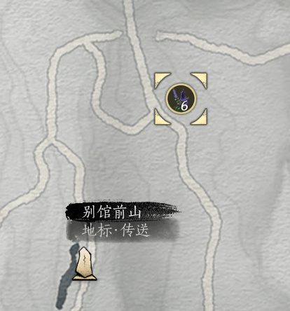
Gathering from braziers by hand in a solo world
The brazier shown below yields 1–3 Fire Oil.
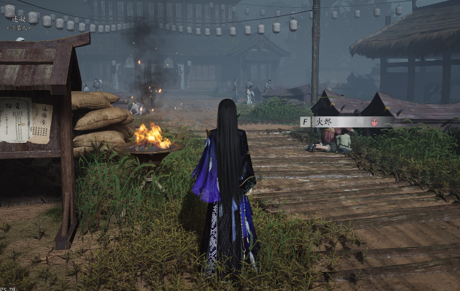
These locations have the most braziers, listed from highest to lowest concentration.
Heavenfall, Kaifeng. Braziers are scattered throughout Heavenfall. Start at the Bloodscale Hall Boundary Stone and make a loop, using Wind Sense to find any braziers you have yet to gather from.

Near the Baima Station Boundary Stone in Kaifeng, people are burning paper money in braziers.
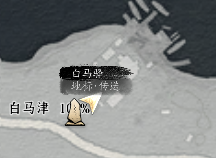
The far end of Harvestfall Village, Qinghe (marked by the arrow).

From the Front Mountain teleport point in Qinghe, follow the arrow uphill. There are braziers along the way, and you may run into the black-clad fighters of Aureate Pavilion.
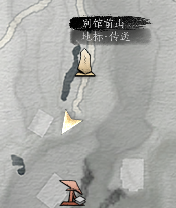
Buddha Fort, Qinghe. There are six braziers before you reach the outpost from the teleport point. Hold Shift as you move between them.
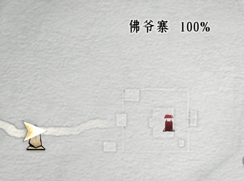
Building a Fire Oil Gathering Route in a solo world
If you bought a Gathering Mount and have enough wood, follow these steps to build a Fire Oil Gathering Route. Once finished, you can ride the mount along it to gather quickly.
Diagram share codes
| Share code | Image | Author | Materials |
|---|---|---|---|
SHARE282eb5dc7c6c5ad0 | 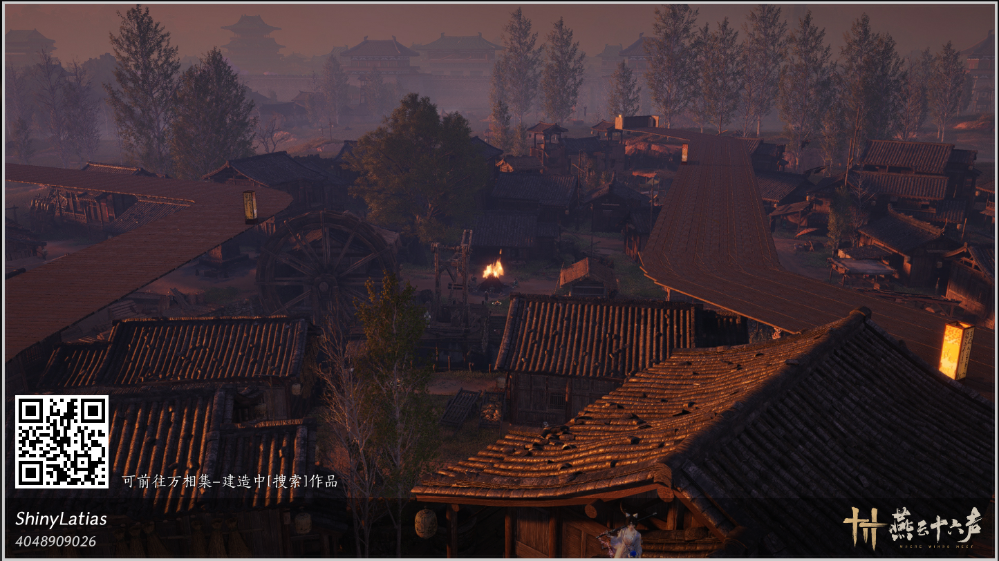 | ShinyLatias | About 982 logs |
SHARE13b547403c84966d | 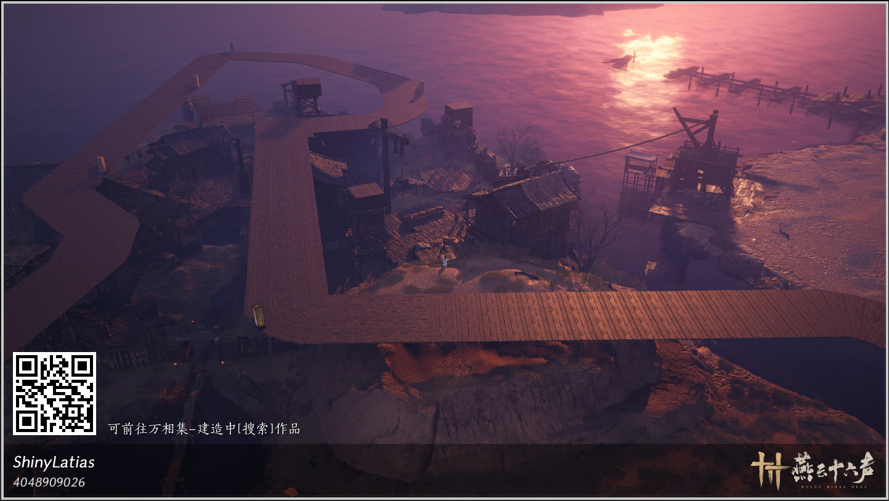 | ShinyLatias | About 1,000 logs |
SHAREd12b08b957e24afc |  | ShinyLatias | About 491 logs |
SHARE44e08c8829845723 |  | ShinyLatias | About 864 logs |
SHAREff0c0c92c61e0ec4 |  | ShinyLatias | About 196 logs |
Building the route
Open the menu and select Appearance.

Select Gallery on the right.

Select Build on the left. Scroll the list if you don’t see it.

Enter the diagram share code in the search bar in the top-right corner.

Open the matching diagram. There should be only one result. Select Get Diagram.

Repeat steps 1–5 to find the diagram again, then select Use Diagram. You can also enter Build Mode and find the diagram you just acquired in your Building Inventory.
 (Once you get the diagram, the button changes to Use Diagram.)
(Once you get the diagram, the button changes to Use Diagram.)Select Place in original position.

If the game says you are too far from the original position, select Go to Location. The map opens with a yellow circle marking the diagram’s area. Teleport nearby and walk into the circle.
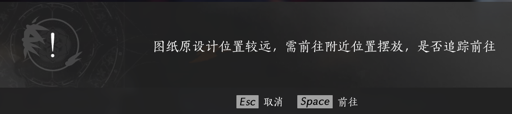
Once inside the area, repeat the placement steps and select Place in original position. The blue hologram appears gradually. When it is ready, approach it to see an interaction labeled with the diagram’s name, as shown.
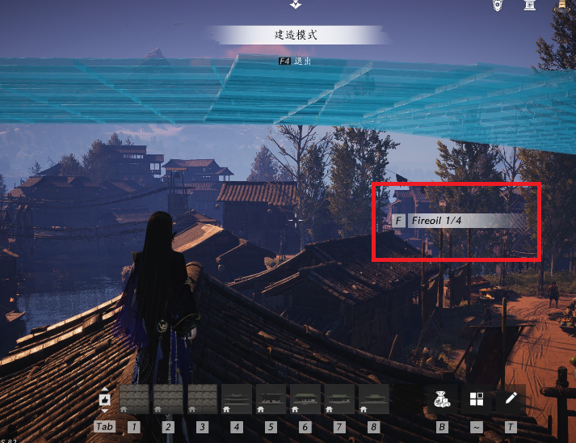
Interact with the hologram and select Auto Completion. Wait for the game to fill in the diagram.

Use Auto Completion for each Fire Oil Gathering Route diagram. Test that the completed route works before continuing.
Approach the finished route again and select Remove Diagram.
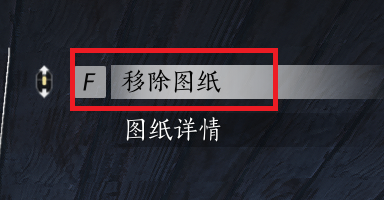
Choose Only remove diagram outline. This prevents you from accidentally triggering the diagram interaction while gathering Fire Oil later.
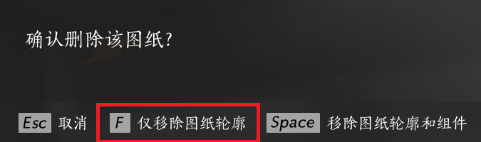